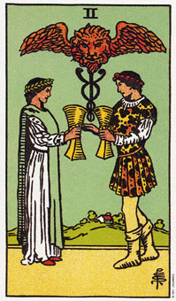

圣杯二意指一种平等的伙伴关系或两性关系。
圣杯二是形容一种合伙、朋友或亲密关系。牌上画着一男一女面对面，手中各持一个杯子。天空相当晴朗，身后的树当中有一件房子。
两人把被子举在同一个高度，意味着平等互信。这可能是在暗示一种平等的爱或生意关系，或任何密切的团队努力或有利的合作关系。
由棒子上的两条蛇和张翅膀的狮子显示出，这男人和女人有一种心灵上的契合。棒子象征人类的脊椎，蛇则代表由能量中枢传达能量到脊椎的管道。就男人而言，这能量中枢位在脊椎底部，而女人则介于两个卵巢之间。
这对男女上方长翅膀的狮子代表能量中枢的顶端，其间充满了心灵和性的能量。就是这种能量导引你去形成各种人际关系，并可能让你对爱有更深入的了解。经由结合男性在行动、力量、活动方面的特质，以及女性在情感、想象及直觉上的特质，他们可以互相学习，同时都变得多产而富创意。
大体上的意义
圣杯二意指一种心灵上的契合。它形容一种既丰富又有创意的友谊或两性关系。当牌局中出现此牌时，它意味着透过爱来连结你和对方的特质，那么你可能会获得某些比你单打独斗的成就还要来得大的东西。这或许可用一句话来作结论，即全部比部分的总和还要大。
在事业的分析上，这张牌说明一种平等的合作关系，而且均蒙其利。他们都能各自贡献出一些东西，他们的努力也各有所获。
两性关系上的意义
在两性关系分析上，圣杯二可能暗示结婚或是你和伴侣之间深入的承诺。这种深刻的互动时你可以超越肉体的束缚，如同长翅膀的狮子所象征的。远处的房子暗示这份结合将可稳固。
在两性关系分析当中，翻到它可说是一张正面的牌，因为它说明了一种两个人之间的授与受是平等的关系。这份关系的特色是承诺、亲密、兴趣与分享，而且通经常会令他人由衷赞赏。
倒立的圣杯二
当圣杯二倒立时，是在形容一种极端的两性关系。今天还充满爱、和睦、和谐，一如这张牌正立时的特质，但是明天就变得紧张、冲突和权力斗争。
当这张牌倒立时，爱退让而恐惧登场，而且由于爱和恐惧是对立的，两者无法共存。它暗示你的两性关系可能是极好或极恐怖的，并且在两者之间摆荡。当你恐惧对自己或情感失控时，你会设法去控制它们，而你的伴侣亦如是。这张牌亦可形容由于一种不平等或不平衡的友谊或两性关系，而令你耗尽心神。
有时候二的倒立也暗示着一种两性关系的结束，不过是不是这个意思还得看它周遭出现了什么样的牌来决定。或许伴侣指意对对方并没有那么深的承诺，或对对方没有那么的在乎。
当此牌倒立时，它可能象征火和水之间的冲突，二者又是导致行动和情感的分裂。这张牌强调的是平衡的需求。一个人有可能正在消耗另一人的创意、情感或心灵，使对方既会丧失自发性和成长的空间。
以生意伙伴而言，这张牌是形容两人陷入一种权力斗争，或是合伙人或同事意图控制对方。
伊娃在作整体分析时，这张牌出现在过去的位置上。
“老实说，我从不曾有过任何一段两性关系，就更别人说两性关系的权利、斗争了。”她解释道。
为了澄清这件事情，我要求她选出另一张牌放在圣杯二旁边。她选了权杖十。我问她这种权力斗争是否发生在事业上，她想了好一会儿，然后回答我她很满意目前的工作，其中并无权力争斗。我们似乎摸不着头绪了。
“那么在这之前的工作有没有权力争斗呢?”我问她。
“不，根本没有。”她回答。
“那么你为什么会离开上一个工作呢?”
“是因为我上司，她几乎令我抓狂。她暗地里利用公司的钱来支付她 购屋费用，而由于我知道这件事情，她让我六年内无法升迁。”
“你觉得你应该获得晋升吗?”
“当然，而且淡公司发现我想要时，他们也这么做了。”(权杖十意味着她工作努力，而圣杯二倒立则意指一种权立争斗。)
“你和你上司的关系，你认为那是一种权力斗争吗?”我持续的问下去。
“那绝对是的。”她回答。